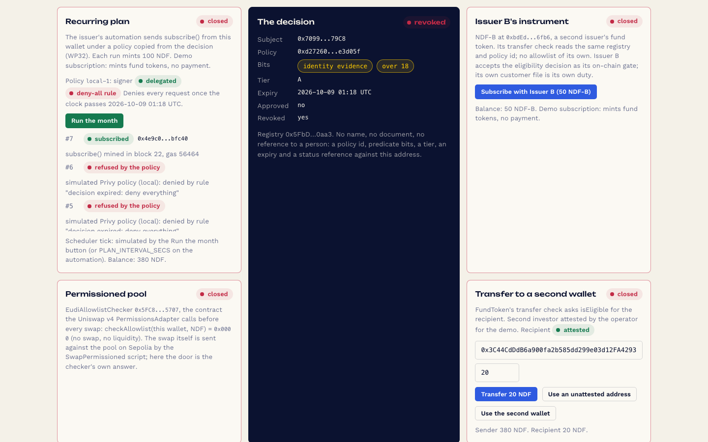

Prove once. Save every month. One revoke closes the plan, the second issuer and the pool.
A retail investor signs in with an email, proves once with the state ID wallet on her phone, and gets one eligibility decision on chain. Her savings plan buys fund tokens on a schedule while she is offline. A second issuer's instrument and a permissioned pool accept the same decision. When the issuer revokes, or the credential expires, the plan, the second issuer and the pool refuse, and fund tokens sent to her revert, because the fund token checks the recipient.
An engineering example built on the Attestat decision, with a Privy embedded wallet and a delegated signer. Parked: code and docs kept, not a live product.
Decision on chain
subject0x7a3f…c41e
bitsevidence 1, over18 1
tierA
expiry2026-10-07
statuseligible
namenot present
Plan runopen
Issuer Bopen
Pool swapopen
Transferopen
Runner logShe is not clicking.
Scripted replay with sample data, in your browser. The working demo is linked below.
Who buys, who uses
The issuer pays. The saver never uploads a document.
Buyer
A fund issuer or transfer agent
It reaches savings-plan customers today through custodial brokers, and gates its token behind its own allowlist. With Attestat it takes recurring retail inflows without operating custody, and without re-checking a stored identity record before every purchase. The chain re-checks the decision at every run.
Later, a second issuer: it wants the same customer on day one, with no allowlist relayer of its own.
User
A retail investor with an email
She has the official test wallet on her phone and no crypto wallet. After email sign-in she has a Privy embedded wallet. She proves once, the issuer approves once, and her plan buys fund tokens on a schedule while she is offline.
She can stop the plan herself at any time. The issuer's revoke stops it too.
Recurring subscriptioninto the fund token. Demo subscription: mints fund tokens, no payment.
Second instrumentIssuer B mints its token to the same address, gated by the same decision.
Pool swapin the Uniswap permissioned pool, gated by the same decision.
Transferof fund tokens to another attested wallet. An unattested recipient is refused.
Otherwise not possible
Three things a plan cannot do today.
isEligible
Code: FundToken.sol and AttestationRegistry.sol
A recurring purchase from a self-custodial wallet needs a signer that acts while the user is away, and every receipt of the fund token is gated on the registry's approval, not revoked, not expired: the same check stops a plan run, a second issuer's mint, a swap and a transfer, with nothing running in the issuer's back office.
0
Market: live gated products memo, 2026-09-06
We found no live product where one on-chain attestation is consumed on chain by more than one independent app, and 0 of 5 core EU exchanges accept another venue's proof, so today a second venue re-verifies, keeps its own file and runs its own revocation loop, and a revocation at venue A never reaches venue B.
Art. 5a
Regulation: eIDAS 2, Art. 5a(8) and 5a(9)
The regulation gives the credential a lifecycle, revocation at the user's request, on compromise or on death, and free validation of wallet validity, but without an on-chain decision that lifecycle stops at the verifier's database and never reaches the token, the pool or the plan.
A plan and a set of doors that fail closed on a decision the customer carries. No business holds her document. No business holds her key.
Boundary we keep: an attestation reused by a second venue does not transfer that venue's duty. Issuer B accepts the eligibility decision as its on-chain gate; its own customer file is its own duty. This case does not claim onboarding reuse.
How it works
Six beats, one decision.
The identity part happens once. The Privy part gives the plan a signer that is bounded twice: by a policy on Privy's side, and by the chain on every run.
PhonePresent
The official test wallet answers the issuer's registered request: given name, family name, over 18. Names go to the issuer's verifier, never to the chain.
Browser tabProve
Proof made in your browser tab on this computer. The zero-knowledge proof binds her wallet address, the policy, the predicate bits and the credential's own expiry.
ChainDecide
The issuer approves in a separate step. One eligibility decision is written against her address: bits, tier, expiry, status reference. No name.
PrivyAllow
She adds the issuer's key as a signer on her embedded wallet, under a policy that allows subscribe() on the Subscription contract and nothing else. She can remove it herself.
RunnerRun
The issuer's runner sends subscribe() from her wallet on schedule. Privy checks the policy. The chain checks the decision. She is not clicking.
IssuerRevoke or expire
One revoke transaction, and the plan run, Issuer B's mint, the pool swap and a transfer to her all revert. Expiry does the same without anyone acting. Manual: issuer revokes; issuer reopens.
Whether the signed call lands. Read by the Subscription contract, both fund tokens, the pool's allowlist checker, and every transfer.
Under the connect card: Wallet by Privy: an embedded wallet created at email sign-in, so an investor without a crypto wallet can hold the fund token. Your identity evidence never goes to Privy; Privy sees an address and the transactions you sign or allow. Sample identity from the official test wallet; testnet funds.
Under the plan card: Savings plan: you allow the issuer's key to send subscribe() from your wallet and nothing else, bounded by a Privy policy and re-checked on chain at every run. Stop it here at any time; the issuer's revoke stops it too. Privy's docs say the signer never sees your key (their statement, not ours).
What the chain sees
One record per address. No name.
Anyone can read this. It is enough for a plan run, a mint, a swap or a transfer to decide, and not enough to know who she is.
bitsPredicate bits the policy verified. In the demo policy: identity evidence, over 18.
expiryThe credential's own expiry, bound by the proof. After it, the plan, the second issuer, the pool and any transfer to her refuse without anyone acting.
revokedSet by one issuer transaction. The same transaction clears approval.
statusRefAn opaque reference to an off-chain status entry. Never a name.
No identity documents on chain, and nothing we could use to find her.
// One eligibility decision per (subject, policyId).// No names, no strings, no personal data.
struct Decision {
bytes32 policyId;
uint256 bits;
uint8 tier;
uint64 expiry;
bytes32 statusRef;
bool revoked;
}
contracts/src/interfaces/IEligibility.sol. Predicate bits and an expiry bound to an address are still personal data in the EDPB's reading; that is why the issuer keeps the file and the chain keeps the decision.
The demo
Twelve beats on a local chain, then Sepolia.
The demo is a route in the Attestat application. It runs on a local chain with a development signer, and on Sepolia with a Privy app the builder clicks by hand.
/showcase/savings-plan

The board (/showcase/savings-plan) in local mode: anvil, a dev signer for investor A, the plan run by the automation in local mode (simulated Privy policy), the decision written by the operator. Shown after "Revoke Investor A": the decision revoked; the plan, Issuer B and the pool closed. The transfer card also reads closed, but the fund token checks the recipient's decision, not the sender's, so a transfer from her to an attested wallet still goes through today; a sender check is on a branch. The plan's history above still lists the subscribed run from before. No Privy app in this run; the Privy path on Sepolia is pending.
Sign in with email. A Privy embedded wallet appears.
Bind: she signs a session nonce with the embedded wallet.
Scan the QR with the official test wallet. Proof made in the browser tab.
Issuer approves. The decision card shows bits, expiry, eligible.
Allow the plan. Privy consent, signer added under the policy.
Runs 1 and 2 confirm from her wallet. She is not clicking.
Issuer B mints its token to her. Same decision, second door.
Swap in the permissioned pool.
Transfer to an attested friend confirms; to a stranger, reverts.
Revoke. The plan, Issuer B and the pool refuse; tokens sent to her revert. Policy set to DENY; plan stopped by issuer.
Expiry demonstrated on a local chain.
A fresh proof after revoke is refused; the operator reopens. Manual.